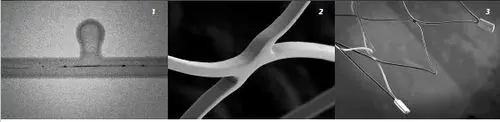

Acclino
O design de célula assimétrica otimizado do Stent de célula fechada com corte a laser garante a mais alta flexibilidade em sua classe. O stent apresenta comportamento de expansão aprimorado, excelente aposição da parede do vaso e ótima conformabilidade, mesmo em anatomias de vasos tortuosos.

Sobre o produto
O novo ACCLINO® flex plus Stent:
Nova gama para mais opções de tratamento
Excelente posicionamento da parede do vaso e conformabilidade excepcional
Até 5,5 mm de diâmetro do stent através de microcateteres de 0,0165
Melhoria do conceito do marcador de raios X
Melhor comportamento de expansão devido à força radial equilibrada
e geometria adaptativa da célula
Baixa trombogenicidade*
Resheathability.